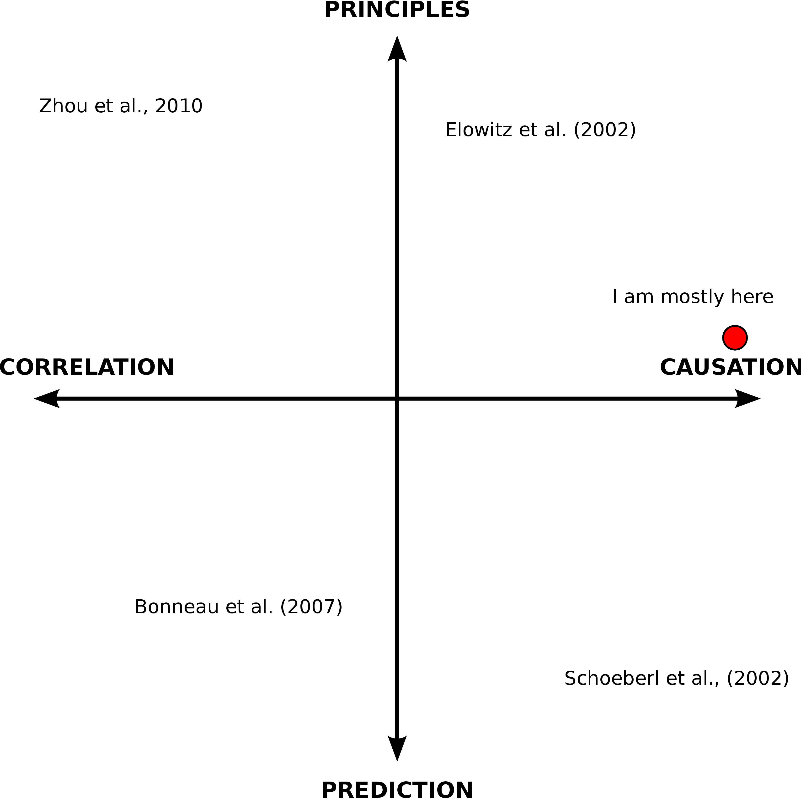
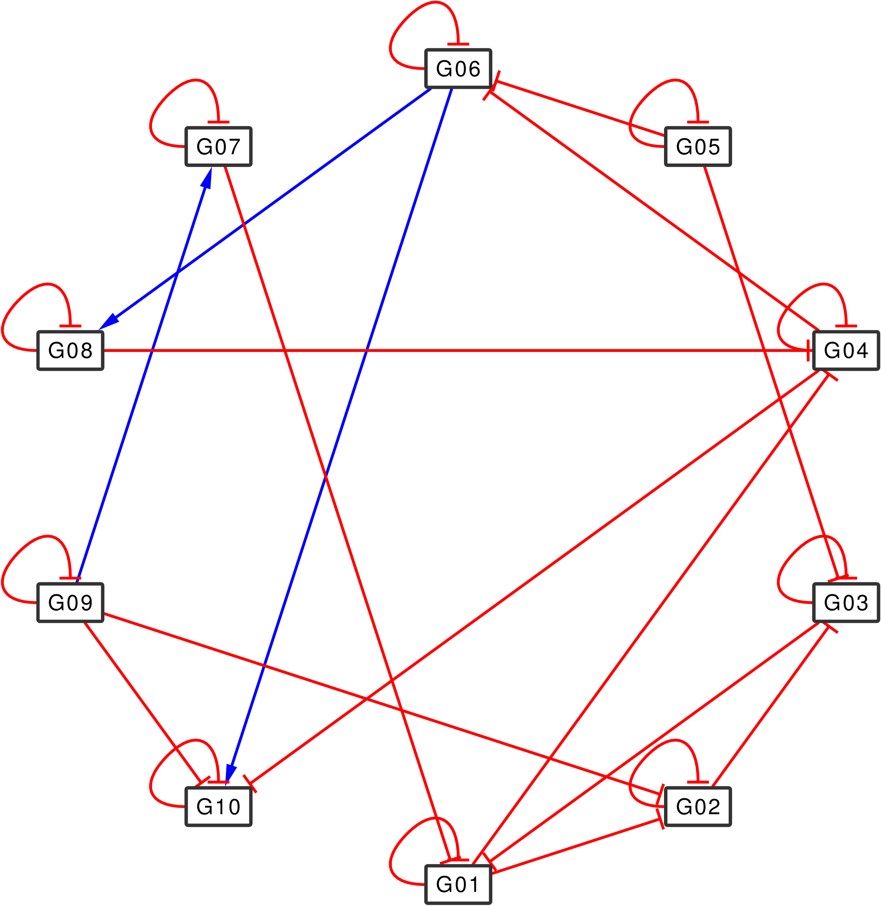
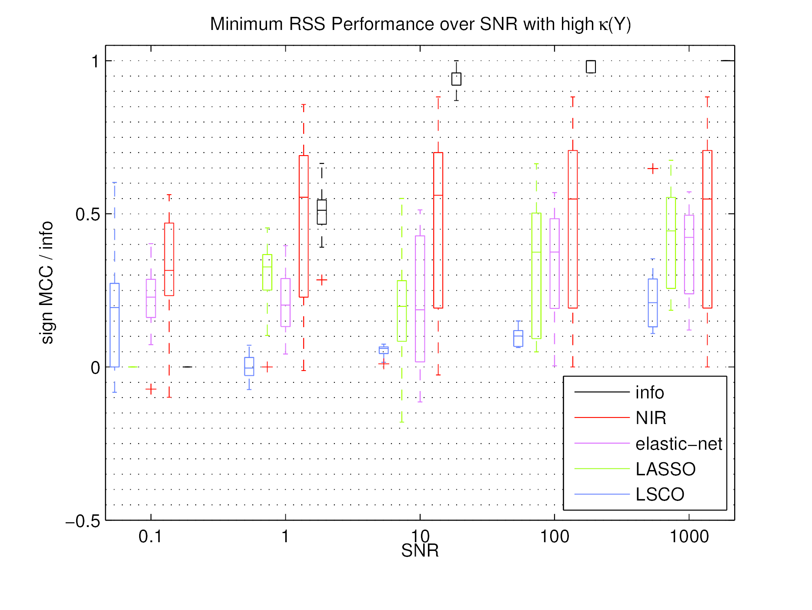

Inferring Gene Regulatory Networks
Andreas Tjärnberg
Table of Contents
Introduction
Network Inference / Systems Biology
Inspired by Arkin and Schaffer (2011)
Gene Regulatory Network (GRN) models
Experimental Setup
Equations Modeling the System
\[ \begin{array}{r c l} \dot{x}_i(t) &=& \sum_{j=1}^N a_{ij}x_j(t) + p_i(t) - f_i(t) \\ y_i(t) &=& x_i(t) + e_i(t) \end{array} \]
at Steady State
\[ \boldsymbol{Y} = -\boldsymbol{A}^{-1}\boldsymbol{P} +\boldsymbol{A}^{-1}\boldsymbol{F} + \boldsymbol{E} \]Optimal Sparsity Selection
Sparsity
|  |
Work-flow
Two Independent Data sets
\begin{equation*}
\begin{array}{c c c c c}
& {\Large{Y_P}} & {\Large{Y_Q}} & {\Large{P}} & {\Large{Q}} \\
{\Large{A_P}} \Leftarrow & \begin{bmatrix}
y_{1,1} & y_{1,2} & \cdots & y_{1,n} \\
y_{2,1} & y_{2,2} & \cdots & y_{2,n} \\
\vdots & \vdots & \ddots & \vdots \\
y_{m,1} & y_{m,2} & \cdots & y_{m,n}
\end{bmatrix} & &
\begin{bmatrix}
p_{1,1} & 0 & \cdots & 0 \\
0 & p_{2,2} & \cdots & 0 \\
\vdots & \vdots & \ddots & \vdots \\
0 & 0 & \cdots & p_{n,n}
\end{bmatrix} & \\
{\Large{A_Q}} \Leftarrow & & \begin{bmatrix}
z_{1,1} & z_{1,2} & \cdots & z_{1,n} \\
z_{2,1} & z_{2,2} & \cdots & z_{2,n} \\
\vdots & \vdots & \ddots & \vdots \\
z_{m,1} & z_{m,2} & \cdots & z_{m,n}
\end{bmatrix} & &
\begin{bmatrix}
q_{1,1} & 0 & \cdots & 0 \\
0 & q_{2,2} & \cdots & 0 \\
\vdots & \vdots & \ddots & \vdots \\
0 & 0 & \cdots & q_{n,n}
\end{bmatrix}\\
\end{array}
\end{equation*}
Single Data set comprised of Independent Samples
\begin{equation*}
{\Large{\hat{A}}} \Leftarrow \begin{array}{c c c}
& {\Large{\hat{Y}}} & & {\Large{\hat{P}}} \\
& \begin{bmatrix}
y_{1,1} & y_{1,2} & \cdots & y_{1,n} & & & & \\
y_{2,1} & y_{2,2} & \cdots & y_{2,n} & & & & \\
\vdots & \vdots & \ddots & \vdots & & & & \\
y_{m,1} & y_{m,2} & \cdots & y_{m,n} & & & & \\
& & & & z_{1,1} & z_{1,2} & \cdots & z_{1,n} \\
& & & & z_{2,1} & z_{2,2} & \cdots & z_{2,n} \\
& & & & \vdots & \vdots & \ddots & \vdots \\
& & & & z_{m,1} & z_{m,2} & \cdots & z_{m,n}
\end{bmatrix} & &
\begin{bmatrix}
p_{1,1} & 0 & \cdots & & & & & \\
0 & \ddots & & & & & {\huge{0}} & \\
\vdots & & \ddots & & & & & \\
& & & p_{n,n} & & & & \\
& & & & q_{1,1} & & & \\
& & & & & \ddots & & \vdots \\
& {\huge{0}} & & & & & \ddots & 0 \\
& & & & & \cdots & 0 & q_{n,n}
\end{bmatrix}\\
\end{array}
\end{equation*}
Linear Independence
|
\[
\eta_{\boldsymbol{y}_k} \triangleq ||\boldsymbol{Y}^T_{t\neq k} \boldsymbol{y}_k||_1 \\
\]
\[ \mathcal{V} \triangleq \big\{k| \eta_{\boldsymbol{y}_k} \geq \sigma_N(\boldsymbol{Y}) \; \textrm{and}\; \eta_{\boldsymbol{p}_k} \geq \sigma_N(\boldsymbol{P}) \big\} \] |
Constrained Least Squares, (CLS)
\[ \hat{\boldsymbol{A}}_{\textrm{reg}}(\tilde{\zeta}) = \arg \min_{\boldsymbol{A}} ||\boldsymbol{A} \boldsymbol{Y}+\boldsymbol{P}||_{l_2} + \tilde{\zeta} ||\boldsymbol{A}||_{l_1}\\ \]
\[ \DeclareMathOperator{\sign}{sign} \begin{align} \hat{\boldsymbol{A}} & = \arg \min_{\boldsymbol{A}} ||\boldsymbol{A} \boldsymbol{Y}+\boldsymbol{P}||_{l_2}\\ \text{s.t.}\; &~ \sign{\boldsymbol{A}} = \sign{\hat{\boldsymbol{A}}_{\textrm{reg}}} \\ \end{align} \]
Results
Benchmark of GRN Inference Algorithms
Aim
- Preferred algorithm
- Expected outcome
- How: Relate to
- Network properties
- Data set properties
Network properties
| # of network: | 20 |
| # states, N: | 10 |
| interampatteness degree: | low VS high |
| sparseness degree: | 0.25 |
| Stable | Yes |
Data set properties
| # of Data sets: | 40 |
| optimal designed P: | 20 |
| random double P: | 20 |
| Samples / set | 2N |
| condition number: | low VS high |
| SNR levels: | 5 |
| Information level: | is 1 when SNR ≤ 1000 |
Performance Measure
Sign Matthew Correlation Coefficient (SMCC)
| A\E | 1 | 0 | -1 |
|---|---|---|---|
| 1 | TP | FN | FN |
| 0 | FP | TN | FP |
| -1 | FN | FN | TP |
Performance
Data property dependence
Sparsity Selection
Sparsity Selection
|  |
Prior Knowledge from Functional Association Networks
Databases of Functional Association
- FunCoup (Schmitt et al., 2013)
- STRING (Szklarczyk et al., 2011)
FunCoup
Prior Incorporation
\[ \min_\boldsymbol{A} ||\boldsymbol{A}\boldsymbol{Y}+\boldsymbol{P}||_{F} + \zeta \cdot \|(1-w_{ij}) |a_{ij}| \|_{1} \]
\[
W \in S^n, ~~~ w_{ij} = \left(
\begin{array}{ccc}
\dfrac{9}{10}c_{ij}, & \text{if} & i \neq j\\
1, & \text{if} & i = j\\
\end{array}
\right)
\]

Conclusions
- Optimal Sparsity
- Selection of Samples For LOOCO
- Un-biased Re-estimation of Network links
- Benchmark
- Data Properties Highly Influential for Inference Performance
- Optimal Sparsity Selection is Beneficial when adding CLS estimation
- Prior Incorporation
- Accurate symmetric prior helps.
Acknowledgements
Erik Sonnhammer
Matthew Studham
Dimitri Guala
Thomas Schmitt
Gabriel Östlund
Christoph Ogris
Torbjörn Nordling
Oliver Fringes
Kristoffer Forslund